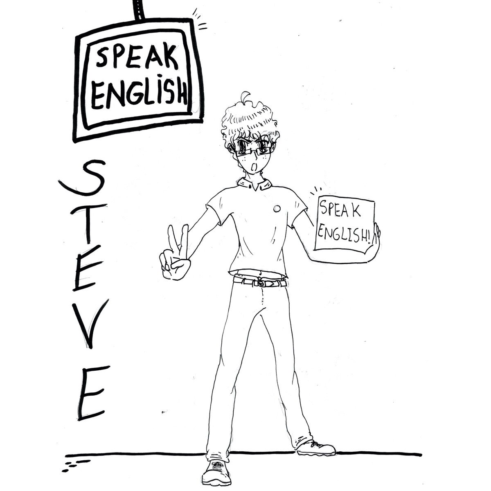

The Story
Back to playAfter years of discovery, of experimenting, and latterly of doubt as a teacher of English, I have arrived, with some serenity, at the coast of light.
COAST of LIGHT is a creative project based on the Cádiz coast in Spain (you can see more here). COAST of LIGHT play is its language-learning side: a collection of classroom tools, mostly random generators, alongside thinking and sentence-building tasks.
I have always been creative in class. I enjoy the randomness of language learning and have long used random generators. I love students making and saying sentences of their own, with a little help from a prompt, and most of the tools here are made for exactly that.
Each page has been built with the help of Claude, who has finally enabled me to create what was in my head.
For more of what’s happening on the coast of light, follow the blog or find me on Instagram. You can also get in touch, suggest an idea or report an issue at studio [at] coastoflight.blog. The site is still a work in progress.
Steve
COAST of LIGHT play is free to use. If you have enjoyed the content and it helps your classes, please consider buying me a drink so I can keep it going. Thank you!Paid safely through PayPal.
Buy me a drink